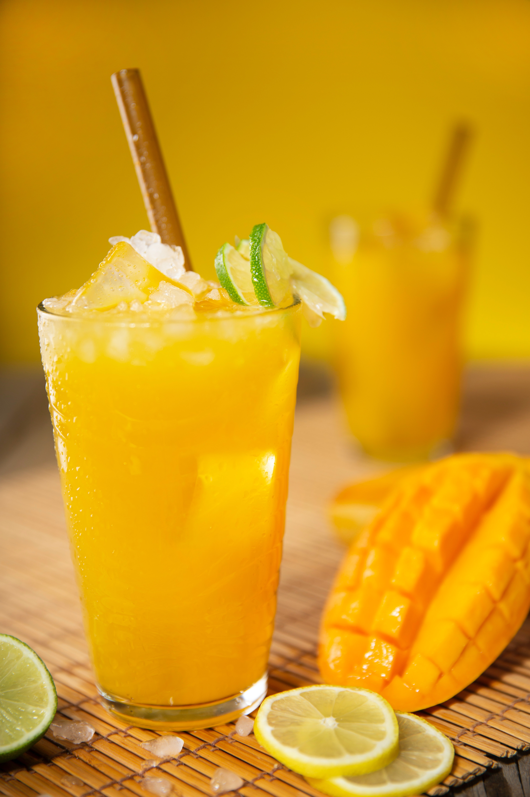
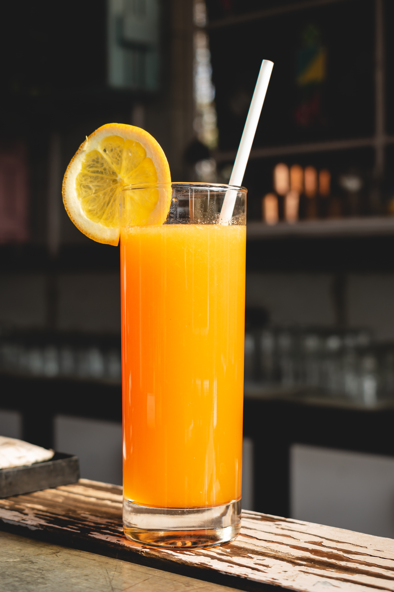
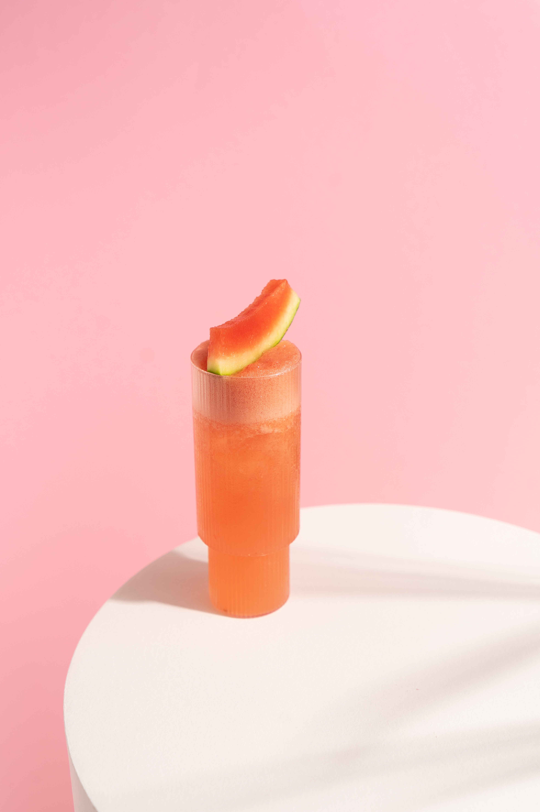

jus de mangue 🎀

ingredients
2 mangues;
1 cas de sucre;
1 citron;
1 verre et demi d'eau;
preparation
1_Commencer par recuperer uniquement la chair de vos mangues.
2_dans un blender mettez-y vos mangue, le jus de citron,le sucre et l'eau mixez bien et voila
3_c'est pret ⚡
jus d'orange 🍊

ingredients
3 oranges;
1 cas de sucre;
1 citron;
1 verre et demi d'eau;
preparation
1_Commencer par recuperer le jus de vos oranges.
2_dans un blender mettez-y le jus d'orange, le jus de citron,le sucre et l'eau mixez bien et voila
3_c'est pret ⚡
jus de pasteque 🍉

ingredients
1/2 pasteque;
1 cas de sucre;
1 citron;
1 et demi verre d'eau;
preparation
1_Commencer par recuperer uniquement la chair de votre pasteque.
2_dans un blender mettez-y votre pasteque, le jus de citron,le sucre et l'eau mixez bien et voila
3_c'est pret ⚡